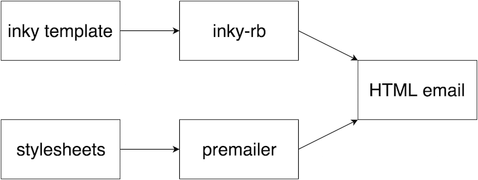

Getting Started with the Ruby Gem
inky-rb is a gem that allows you to bring the power of Foundation for Emails into your Rails apps. It can be embedded into the Asset Pipeline, combining with a CSS inliner to let you generate awesomely responsive HTML emails that work across various clients.
How It Works

inky-rb is a pure Ruby implementation of the Inky templating language that converts simple custom HTML tags like <row> and <column> into the complex table-based HTML required for emails.
Using a CSS inliner like premailer-rails or roadie, you're able to keep your email templates lean by avoiding the need to manually embed styles in the markup. By parsing your email template, the inliner is able to locate your referenced stylesheet and go through all of the selectors specified within it, assigning the styles to matching elements within the document.
The result of this approach is an HTML email, as styled or as responsive as you need it, with a fraction of the code required by writing emails the old fashioned way.
Getting Started
Installing inky-rb in your Rails application requires only a few simple steps. Get the ball rolling by adding the following to your app's Gemfile:
gem 'inky-rb', require: 'inky'
# Stylesheet inlining for email
gem 'premailer-rails'Then execute:
bundle installRun the following command to set up the required styles and mailer layout:
rails g inky:install(You can specify the generated mailer layout filename like so: rails g inky:install some_name)
Rename your email templates to use the .inky file extension. Note that you'll still be able to use ERB within the .inky templates:
welcome.html => welcome.html.inky
pw_reset.html.erb => pw_reset.html.inkyDone! You're now all set to start writing responsive emails in your Rails app.
Standalone Assets
To include only the Foundation for Emails styles in your Asset Pipeline, without the Inky templating language, use the foundation_emails gem.